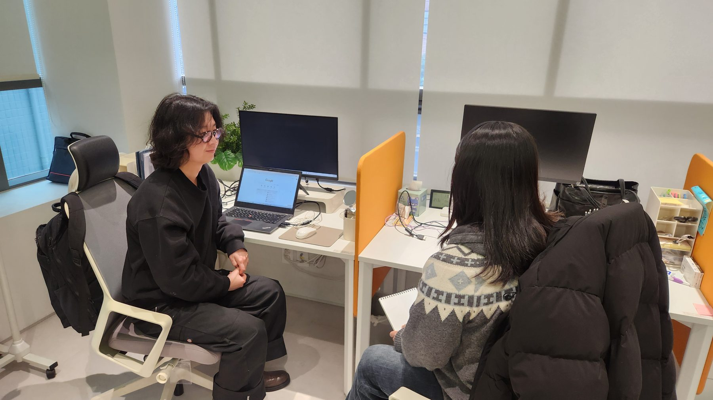

1회
지금 가장 큰 고민 하나를 정리하고 싶을 때
고민을 구조화하고 다음 한 걸음을 정합니다.
70,000원

저는 사람들이 타고난 가능성을 최대한 펼치며 사는 것이 그 사람에게도, 세상에도 좋은 일이라고 믿습니다. 어릴 때부터 자기 분야에 헌신해 탁월한 결과를 만들고 그것을 나누는 사람들의 강연을 찾아보며 자랐고, 다른 사람이 그렇게 살도록 도울 때 제가 가장 깊이 몰입한다는 것을 알게 되었습니다.
저 역시 어떻게 살아야 할지 매일 고민했습니다. 원하는 것이 생기면 바로 선택해서 부딪혀 보는 편이었지만, 그것만으로는 확신이 생기지 않았습니다.
경험을 더 쌓는다고 확신이 생기지는 않았습니다.
확신은 내면을 깊이 들여다보고, 솔직한 질문을 던지고, 내가 추구하는 가치와 비전을 찾은 뒤에야 찾아왔습니다. 가치와 비전, 삶과 일, 그리고 나를 움직이는 힘이 하나로 이어지는 경험이었습니다.
교육 기획자로 6년을 일했습니다. 한 분야 최고의 전문가들이 가진 지식을 교육 콘텐츠로 만들었고, 청년들이 자신만의 커리어를 찾도록 돕는 교육 프로그램을 처음부터 끝까지 설계했습니다. 그중 3년은 60여 명의 청년과 1:1로 마주 앉아 고민을 듣고 함께 길을 찾았습니다. 그렇게 정리한 내용이 자기소개서에 진정성과 힘을 더해 실제 취업으로 이어지는 경우를 많이 보았습니다.
가장 의미 있었던 순간은 언제나 1:1 대화에서 누군가 자기 길을 스스로 알아차릴 때였습니다. 그래서 이제 그 일에 온전히 집중하려 합니다. 취업이든 이직이든, 삶의 중요한 순간에 후회 없는 선택을 할 수 있도록 곁에서 돕겠습니다.
박규진 드림
나에게 맞는 일과 회사를 찾는 방법은 바깥보다 안쪽에 먼저 있습니다. 내가 무엇을 중요하게 여기는지, 어떤 환경에서 펼쳐지고 어떤 환경에서 시드는지 알면 선택의 기준이 생깁니다.
어바웃 프리덤은 사람은 자기가 누구인지 아는 만큼 자유롭다고 믿습니다. 라이프 코칭은 그 앎을 정리하고, 그 위에 다음 걸음을 설계하는 시간입니다.
순서대로 하나씩 꺼내고 정리합니다. 프로그램 길이에 따라 다루는 깊이가 달라집니다.
요즘 머릿속을 가장 오래 차지하는 고민이 무엇인지, 그 고민이 일과 삶에 어떤 영향을 주는지 말로 꺼냅니다.
진로, 회사, 관계에서 반복해 온 선택을 따라가며 그 밑에 깔린 기준과 가치관을 찾습니다.
남들이 좋다고 하는 삶이 아니라, 내가 원하는 하루와 일의 모습을 구체적으로 그립니다.
그 삶으로 가는 길에서 나를 붙잡는 것과 밀어주는 것을 내 안과 밖으로 나눠 정리합니다.
지금의 시간, 돈, 역량으로 어디까지 갈 수 있는지 현실적으로 따져봅니다.
실행을 미뤄온 이유, 반복해서 걸려 넘어지는 고통이나 강박이 무엇인지 마주합니다.
혼자 할 것, 습관과 시스템으로 만들 것, 도움을 구할 것을 나눠 다음 3개월 계획을 세웁니다.

정리된 기준이 있으면, 일과 회사를 고를 때 남의 기준이 아니라 내 기준으로 고를 수 있습니다.
어떤 프로그램이 맞을지는 첫 통화에서 함께 정합니다.
지금 가장 큰 고민 하나를 정리하고 싶을 때
고민을 구조화하고 다음 한 걸음을 정합니다.
70,000원
방향을 잡고 싶을 때
일곱 가지 질문을 세 번의 만남에 나눠 다룹니다.
210,000원
깊이 정리하고 설계하고 싶을 때
일곱 가지 질문을 충분히 다루고, 마지막 회차에 정리본을 함께 완성합니다.
350,000원
코칭은 진단이나 치료가 아니라, 지금의 삶과 앞으로의 선택을 정리하고 설계하는 대화입니다. 마음의 어려움이 깊어 일상이 힘든 상태라면 전문 상담을 먼저 권해드립니다.
첨삭이나 면접 준비가 중심은 아닙니다. 다만 코칭에서 정리한 가치와 기준은 지원서와 면접에 진정성을 더해줍니다. 필요하면 코칭 안에서 지원 방향을 함께 살펴봅니다.
첫 통화에서 함께 정합니다. 한 가지 고민을 정리하고 싶다면 1회, 방향을 잡고 싶다면 3회, 일곱 가지 질문을 깊이 다루고 싶다면 5회를 권합니다.
네. 직접 오기 어려우시면 Google Meet로 진행하며, 비용은 같습니다.
3회와 5회 프로그램은 첫 만남 후 다음 회차 전까지 말씀해 주시면 첫 회 비용을 포함해 전액 환불해 드립니다(1인 1회). 1회 프로그램은 진행 후 환불 대신, 3회나 5회로 이어가실 때 1회 비용을 차감합니다.
코칭에서 나눈 이야기는 밖으로 꺼내지 않습니다. 코칭 사례를 소개하고 싶을 때는 코칭이 끝난 뒤 따로 여쭙고, 동의해 주신 경우에만 이름과 알아볼 수 있는 내용을 빼고 소개합니다.
신청서를 보내주시면 제가 직접 연락드리고, 10~15분 통화로 맞는 프로그램을 함께 정합니다. 신청만으로는 비용이 들지 않습니다.